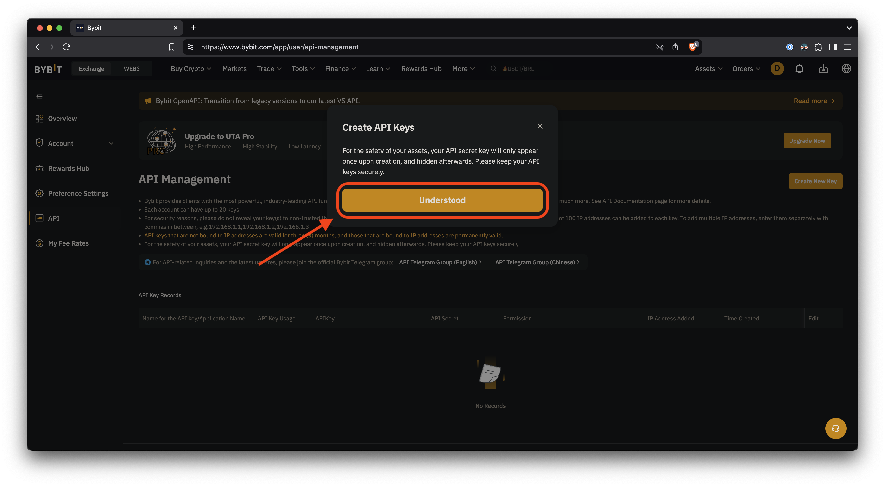
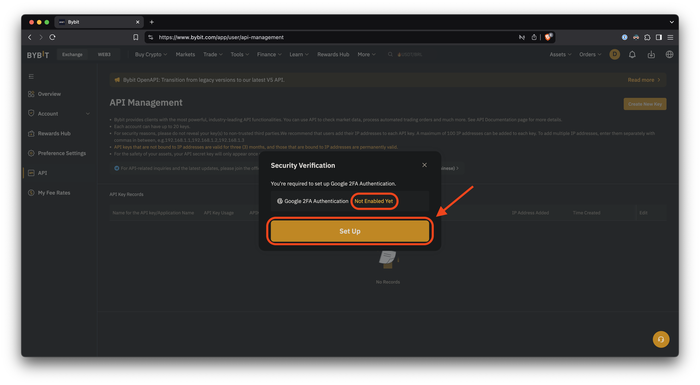
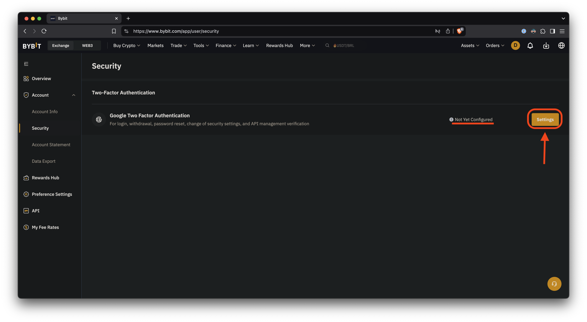
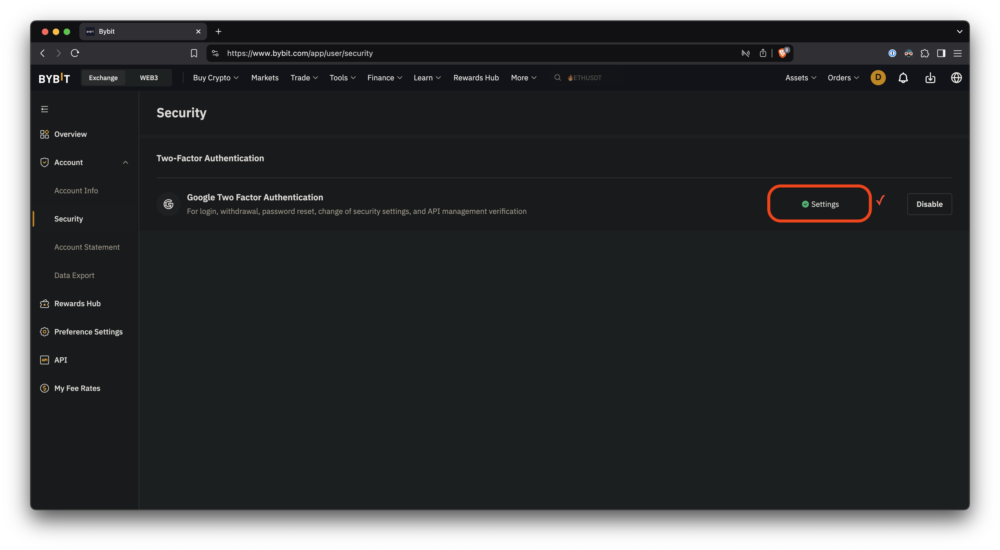
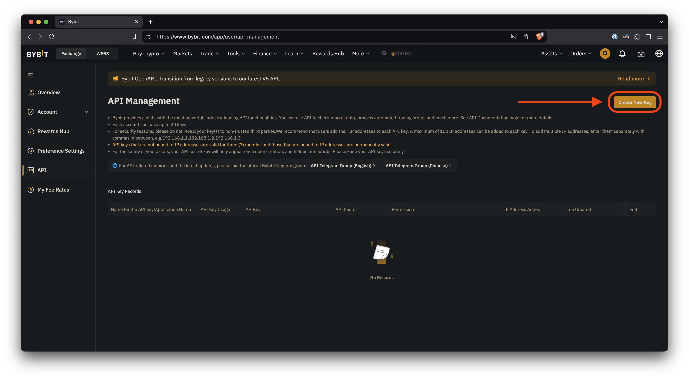
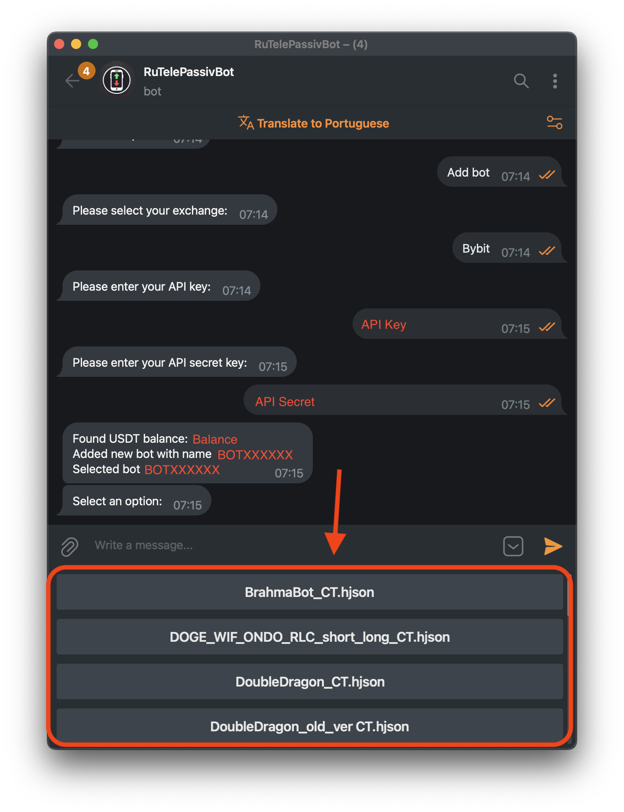
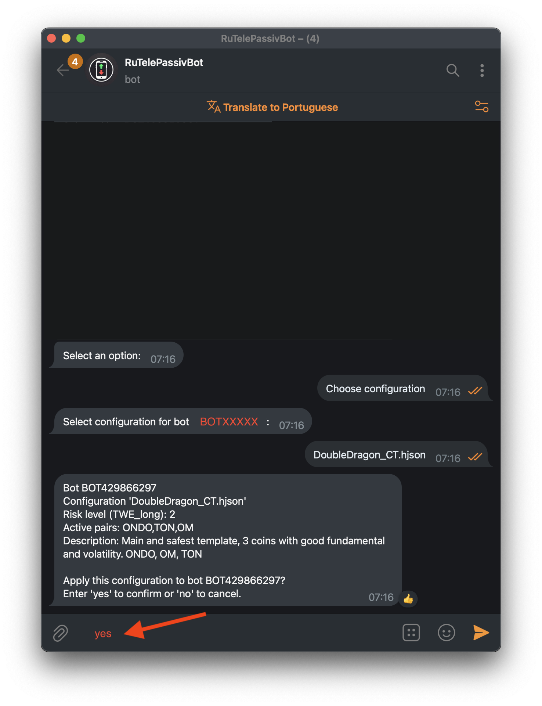

Step by step guide
- Step 1 and 2
- Step 3
- Step 4
- Step 5
- Step 6
- Step 7
- Step 8
- Step 9
- Step 10
- Step 11
- Step 12
- Step 13
- Step 14 to 19
- Step 20
- Step 22
- Step 23 and 24
- Step 25
- Step 26
- Step 27
- Step 28
- Step 29
- Step 30
- Step 32
Click on your profile picture [1] and choose create a new account [2]

Press "create" to create a new account

Give the account a name, for example, the name of the bot you are going to run

Complete the security verification

Switch to the newly created account

Now that you are in the new account, click in the profile's image and choose API

Create a new key

If your new sub account has no 2-factor auth, you will need to set up before continuing
Proceed to set up the 2-factor auth
Now go back to the API section, as show in step 7
Again click on "Create new key" to start the process
Choose "System-generated API keys
Fill the form as shown in the picture
Note that the IPs should contain no space:
31.41.63.194,146.19.106.113

Save both the API Key and Secret, as it will be used later on

If you see this, you created the keys successfully, now go to Telegram
Press "/start" to start the bot and then "Add Bot"

Select your exchange, in the example we used Bybit
First, paste the API Key generated in step 20, and send the message
Now, paste the API Secret generated in step 21, and send the message
After the bot is created, it's time to choose your bot configuration

For this guide, we chose Brahma Bot

Optionally, you can change the wallet exposure risk [30] and unstuck level [31]
If you want to learn more about these options, for now, ask in the channel!

Finally, it's time to run the bot